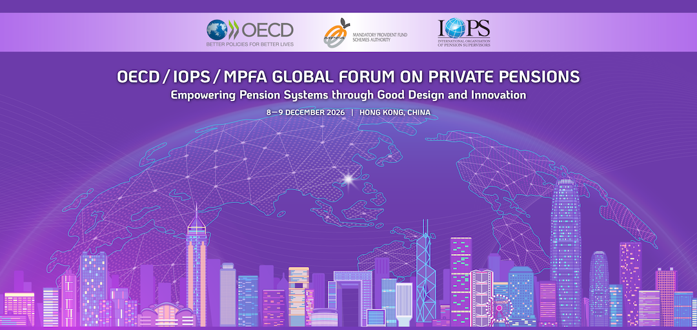

If you cannot view this email properly, please click here.
|
||||||
 |
||||||
[Opt1] [FirstName] [Surname] Dear [Opt1] [Surname], The Mandatory Provident Fund Schemes Authority (MPFA) will co-host with the Organisation for Economic Cooperation and Development (OECD) and the International Organisation of Pension Supervisors (IOPS) the 2026 OECD/IOPS/MPFA Global Forum on Private Pensions. This prestigious two-day Global Forum, scheduled for 8 to 9 December 2026, will discuss how to empower global pension systems through good design and innovation. The Global Forum, as a flagship international event, will feature high-level plenary discussions and bring together senior officials from supervisory authorities in OECD and IOPS member jurisdictions, alongside distinguished experts from the pension fund industry and leading research institutes. IOPS, the international standard-setting body for pension supervision with participation from over 80 jurisdictions worldwide, was established with the objective of improving the quality and effectiveness of private pension systems globally. The MPFA is an active member of IOPS and is honoured to host this important event. With your valued support, the MPFA looks forward to welcoming delegates from around the world to showcase the MPF System to esteemed overseas experts. We are exceptionally privileged that The Hon John KC Lee, the Chief Executive of the Hong Kong Special Administrative Region, will officiate at the Opening Ceremony and will deliver a keynote speech for this occasion. You are cordially invited to attend the Global Forum, the details of which are as follows:
In addition, a Gala Dinner will be held on 8 December 2026 (Tuesday) for 300 exclusive guests, including distinguished interlocutors from members and observers of IOPS comprising supervisory bodies worldwide and a number of international organizations, Chinese Mainland participants and local stakeholders. The Honourable Paul Chan, the Financial Secretary of HKSAR will be the Guest of Honour and deliver a keynote speech. We look forward to welcoming you to the Global Forum.
Ayesha Macpherson Lau |
||||||
Enquiries
|